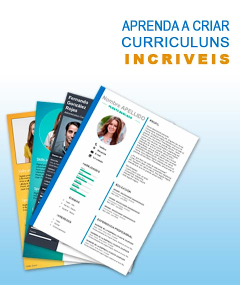

Se você soubesse que tem previsão de dobrar o número de empregos em 2022, você acharia um bom negócio ter um bom curriculum profissional? Se sim, saiba que este curso dar essa oportunidade de você ser uma dessas pessoas contratadas em 2022 . Trata-se de dar o primeiro passo entender como as empresas vão contatar, quais oportunidades vão surgir em 2022 e está pronto para elas.
Ao final de outubro de 2020, o Brasil tinha saldo de 41,205 milhões de empregos com carteira assinada. Isso representa aumento na comparação com janeiro deste ano (38,801 milhões de empregos) e, também, com outubro de 2020, quando o saldo estava em 38,342 milhões. O mercado global de empregos está voltando a contratar profissionais, focado em dar oportunidade a jovens inexperientes ou do primeiro emprego.
Em razão das oportunidades que estão surgindo, quem estiver preparado e qualificado, ganhará destaque na hora da contatação. A preocupação global é com os jovens que querem trabalhar, precisam ajudar seus pais em casa, ou manter os estudos, possam antar logo no mercado de trabalho.
É por isso que a WAY Qualificação Profissional está dando oportunidade de qualificação e preparo esses jovens, para que tenham um bom curriculum profissional, por que eles estão cada vez mais ficando ansiosos e com medo do futuro.
Mas, afinal o que é um curriculum profissional?
Estamos falando de um documento bem elaborado, capazes de apresentar as características mais relevante de um profissional. Que cause impactos positivo de valor do perfil de um candidato. Que mostra aos recrutadores o que eles precisam saber a respeito de um profissional. De maneira geral, um bom curriculum precisam ter:
Uma boa apresentação;
Estratégia ao distribuir as informações;
Um objetivo bem elaborado onde identifique as particularidades de cada candidato;
Criar uma boa impressão do profissional;
Apresentar suas habilidades e características de forma verdadeira e assertiva;
Maximizar as chances de contatação;
Os alunos da WAY Qualificação Profissional que tem seus Curriculum profissionais desenvolvidos em nossos cursos, mostram que fazem diferença em suas escolas e nas empresas que trabalham.
De acordo com o levantamento, 88 % dos profissionais que enviaram seus curriculum profissionais para as empresas, foram chamados para entrevistas e 74% foram contatados.

Como fazer seu curriculum profissional e aproveitar a expansão no mercado de trabalho.
Observando essa deficiência na qualificação e falta de preparo dos profissionais para ter um bom curriculum, a especialista em recrutamento e seleção da WAY Qualificação Profissional, Adriana Diógenes, decidiu preparar de forma gratuita a Jornada do profissional de Impacto. São uma série de cursos.
O conteúdo gratuito e totalmente presencial será disponibilizado entre os dias 05 e 08 de janeiro, e tem o objetivo de revelar quais são as características necessárias para ter um bom curriculum profissional e ser requisitado e, consequentemente, alcançar seu emprego dos sonhos em 2022.
O conteúdo passa pela definição do currículo profissional e como ter estratégias para iniciar uma carreira; aborda ainda quem é o profissional escolhido pelas empresas e o que fazer para ser contatado em 2022.
Confira abaixo a relação completa do conteúdo das aulas:
Aula 1 - 05/01
A revolução que está mudando o mercado
O que é um curriculum profissional e como isso pode mudar sua busca por trabalho.
Aula 2 - 06/01
Quem é o profissional do futuro?
As 3 competências essenciais que você precisa ter
Aula 3 - 07/01
O mapa para se tornar o candidato de impacto
O passo a passo completo para embarcar nessa jornada
Aula 4 - 08/01
Sua virada profissional rumo ao futuro
A hora de dar a guinada certa na sua carreira
Para participar da Jornada do profissional de Impacto e criar seu currículo profissional, e conquistar seu emprego em 2022, basta se inscrever clicando no link abaixo.